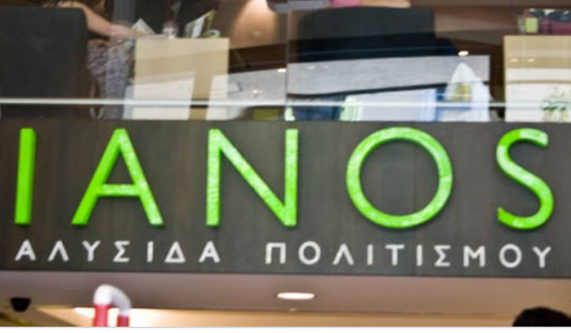

|  |
Ianos bar and restaurant is a local business located at Kasarani, Nairobi County. It was started in 2009 by a person named Ian Warui and his wife Naomi Wanja. At the time, it was just a “kiosk” and they selling only fruits, vegetables, chapati, ugali, rice, beans, maize, and porridge. With time the number of customers grew and they had to build a bigger structure thus came the Ianos bar and restaurant. The menu also grew and they started offering many delicacies. The restaurant opens daily from 4.00am to 8pm. The bar is open from 4-7pm every day while on weekends it opens from noon to 7 pm. The place has a great ambience and it is a very nice place to go for brunch, dinner or family outings. Everyone is welcomed to come and enjoy our wide range of tantalizing delicacies.
There is an extensive range of foods offered at Ianos bar and restaurant. For example rice, pizza, ugali, eggs, fries, sausages, chicken, pilau, fish, samosa, bhajia etc. We offer beverages like sodas, juices, coffee, tea, all types of alcohol, wines and spirits. We have various amenities such as spa, gym, car wash and ample parking space. We also have free WIFI for all customers
facebook @ianosbarandrestaurant
instagram @ianosbarandrestaurant
Subscribe to our NewsLetter